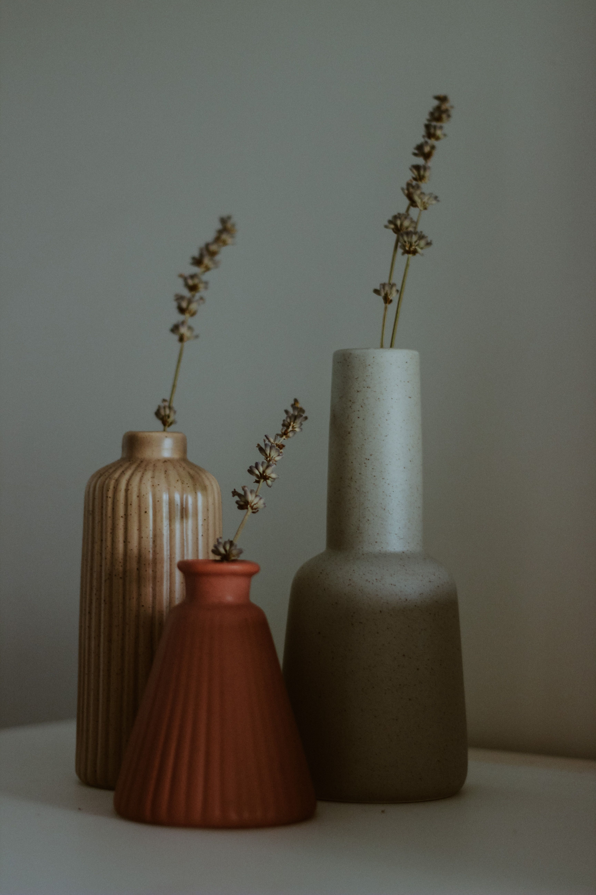
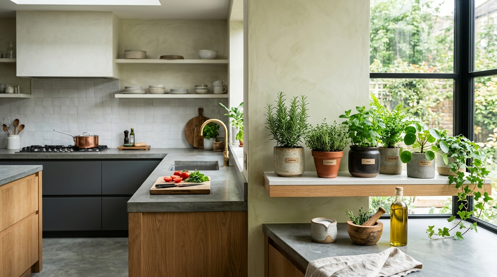

En este artículo
Introducción
Descubre cómo decorar con piezas artesanales de forma equilibrada, combinando materiales, texturas, historia y funcionalidad sin recargar los espacios.
Antes de empezar, conviene observar las condiciones reales de la vivienda y definir qué problema quieres resolver. Las soluciones más efectivas suelen combinar planificación, mantenimiento y decisiones proporcionadas, en lugar de depender de un único truco.
En esta guía encontrarás un método práctico para avanzar paso a paso, con criterios que puedes adaptar al tamaño de tu casa, presupuesto y rutina. La prioridad es mejorar el espacio sin crear nuevos problemas de seguridad, limpieza o mantenimiento.
Haz cambios graduales y evalúa el resultado. Cuando una intervención implica instalaciones, estructuras o trabajos especializados, consulta a un profesional cualificado antes de modificar elementos que puedan afectar la vivienda.
Elegir piezas artesanales con intención y calidad
Incorporar artesanía no significa llenar la casa de objetos decorativos. Una sola pieza bien elegida puede aportar textura, historia y personalidad. Empieza por observar qué necesita la habitación: quizá una lámpara, una cesta, una cerámica o un textil. Elegir desde una función concreta evita comprar objetos que después no encuentran un lugar adecuado.
Cuando sea posible, conoce quién fabricó la pieza, qué materiales utilizó y cómo debe cuidarse. La artesanía puede mostrar pequeñas variaciones, marcas de herramientas o diferencias de color que forman parte del proceso manual. Distingue esas características de defectos estructurales que puedan afectar el uso.
Prioriza piezas que realmente te gusten y puedan convivir con la decoración durante años. Las tendencias cambian con rapidez, mientras los objetos vinculados a una técnica, un lugar o una experiencia personal suelen conservar significado. No necesitas que toda la casa siga un estilo artesanal.
Evalúa la escala. Una cerámica pequeña puede perderse sobre una mesa muy grande, mientras un tapiz enorme puede dominar una habitación compacta. Antes de comprar, mide la superficie disponible y considera el espacio vacío que debe quedar alrededor.
La funcionalidad añade valor. Cestas tejidas pueden organizar mantas, bandejas de madera pueden reunir objetos y cerámicas aptas para uso alimentario pueden formar parte de la mesa. Cuando una pieza se utiliza con frecuencia, se integra de manera natural en la vida cotidiana.
Finalmente, compra de forma consciente. Ferias, talleres, cooperativas y comercios especializados permiten encontrar trabajos con procedencia más clara. Preguntar por materiales, técnicas y cuidados demuestra interés y ayuda a tomar una decisión informada.
Consejo práctico
Observa el resultado durante varios días antes de realizar nuevos cambios. Ajustar una decisión cada vez permite identificar qué funciona realmente en tu espacio y evita gastos o intervenciones innecesarias.

Combinar materiales, colores y texturas sin perder coherencia
Los elementos artesanales suelen destacar por su textura. Madera tallada, fibras vegetales, barro, vidrio soplado, metal trabajado y tejidos añaden superficies que contrastan con muebles industriales más lisos. Esta diferencia puede enriquecer un espacio minimalista sin necesidad de añadir muchos colores.
Elige una relación visual entre las piezas. Puede ser un material repetido, una gama de tonos naturales o una forma similar. No es necesario que todo combine exactamente; basta con que exista algún vínculo que evite una sensación aleatoria.
En una habitación neutra, un textil artesanal puede introducir color y convertirse en punto focal. Si el espacio ya tiene estampados intensos, utiliza artesanía en tonos más tranquilos para equilibrar. La cantidad de información visual debe adaptarse al tamaño de la habitación.
Combinar artesanía tradicional con mobiliario contemporáneo suele funcionar cuando las proporciones son correctas. Una mesa sencilla puede destacar una cerámica expresiva; una estantería moderna puede servir como fondo para objetos de madera. Evita crear escenarios temáticos que parezcan una tienda de recuerdos.
Los materiales naturales requieren cuidados específicos. Fibras pueden decolorarse con sol intenso, algunas maderas necesitan protección y determinadas cerámicas no son aptas para lavavajillas o exterior. Pregunta antes de ubicar una pieza en baño, cocina o terraza.
La iluminación ayuda a mostrar textura. Luz lateral suave puede resaltar relieves de un tejido o superficie tallada. Evita focos demasiado intensos sobre materiales sensibles y protege obras únicas de humedad o radiación solar prolongada.
Consejo práctico
Observa el resultado durante varios días antes de realizar nuevos cambios. Ajustar una decisión cada vez permite identificar qué funciona realmente en tu espacio y evita gastos o intervenciones innecesarias.
Integrar artesanía en cada espacio de la casa con equilibrio
En el salón, utiliza una o dos piezas con presencia: una manta tejida, una cesta grande o una obra mural. Después deja que objetos más pequeños acompañen sin competir. Las superficies completamente llenas hacen que cada pieza pierda importancia.
En el comedor, vajilla, manteles, centros de mesa y lámparas artesanales pueden aportar carácter. Si la mesa se utiliza diariamente, prioriza materiales fáciles de limpiar y piezas resistentes. Guarda objetos delicados para ocasiones especiales en lugar de exponerlos a golpes constantes.
En el dormitorio, textiles hechos a mano, una lámpara o un pequeño banco pueden crear una atmósfera cálida. Mantén despejadas las zonas de descanso y evita acumular decoración sobre mesillas. La artesanía debe mejorar el ambiente, no complicar la limpieza.

En cocinas y baños, comprueba que los materiales toleren humedad, grasa y limpieza frecuente. Una cesta bonita puede deteriorarse rápidamente junto a una ducha si no está diseñada para ese entorno. Cerámica vidriada, madera correctamente tratada y textiles lavables son opciones más prácticas según el uso.
Las paredes ofrecen espacio sin ocupar superficie de paso. Tapices, platos decorativos, cestas planas o pequeñas esculturas murales pueden crear una composición. Utiliza fijaciones adecuadas al peso y evita instalar objetos pesados sobre camas o zonas donde una caída pueda causar lesiones.
Revisa la decoración con el tiempo. Si incorporas una pieza nueva, considera retirar temporalmente otra. Rotar objetos permite apreciarlos de nuevo y evita saturación. Una casa con elementos artesanales funciona mejor cuando cada pieza tiene suficiente espacio para contar su propia historia.
Consejo práctico
Observa el resultado durante varios días antes de realizar nuevos cambios. Ajustar una decisión cada vez permite identificar qué funciona realmente en tu espacio y evita gastos o intervenciones innecesarias.
Una forma sencilla de comenzar es elegir una categoría. Puedes incorporar cerámica en la mesa, textiles en el salón o cestería en el almacenamiento. Trabajar una categoría evita comprar muchas piezas desconectadas y permite aprender sobre materiales, técnicas y cuidados antes de ampliar la colección.
Si viajas y compras artesanía, considera cómo transportar la pieza y si su procedencia cumple las normas aplicables. Algunos materiales de origen vegetal o animal pueden estar regulados. Pregunta al vendedor y conserva documentación cuando sea necesaria, especialmente para objetos antiguos o especies protegidas.
En piezas de segunda mano, revisa estabilidad, grietas, olores y tratamientos anteriores. Una silla artesanal antigua puede necesitar reparación profesional antes de soportar peso. No utilices recipientes decorativos antiguos para alimentos si desconoces la composición de sus esmaltes o acabados.
Los objetos artesanales también pueden funcionar como regalos, pero evita elegir únicamente por su apariencia. Conocer los gustos y necesidades de la persona aumenta la probabilidad de que la pieza se utilice. Una tabla, cesta o textil funcional puede integrarse con mayor facilidad que un objeto puramente ornamental.
Para crear una colección, establece límites de espacio. Por ejemplo, reserva una estantería o vitrina y evita superar su capacidad. Cuando esté completa, rota piezas en lugar de añadir muebles adicionales para exhibirlas. Este criterio mantiene la casa ordenada y hace que la colección siga siendo especial.
Cuida la procedencia cultural. Algunas técnicas, símbolos y objetos tienen significados específicos. Comprar a artesanos o comercios que explican el contexto ayuda a valorar el trabajo más allá de una tendencia estética y reduce la posibilidad de tratar piezas culturales como simples accesorios.

La reparación forma parte del valor artesanal. Un textil puede remendarse, una cesta puede reforzarse y determinados muebles pueden restaurarse. Pregunta al creador si ofrece reparación o instrucciones. Conservar una pieza durante años suele ser más coherente con su carácter que sustituirla por pequeños daños.
Al final, la artesanía funciona mejor cuando se relaciona con la vida de quienes habitan la casa. Una pieza heredada, comprada directamente a un creador o elegida durante un viaje aporta una historia real. Esa conexión personal crea una decoración difícil de reproducir mediante objetos comprados únicamente para seguir una moda.
En una vivienda de estilo minimalista, la artesanía puede aportar calidez sin romper la sencillez. Elige una pieza de gran presencia y mantén el entorno despejado. Un jarrón de barro, una lámpara tejida o un banco de madera pueden convertirse en el detalle principal sin añadir más accesorios.
En ambientes rústicos, controla la cantidad de texturas para evitar exceso. Si ya existen vigas, madera y piedra, incorpora piezas artesanales más sencillas o con acabados lisos. La repetición de demasiados materiales ásperos puede hacer que el espacio se sienta pesado.
En estilos contemporáneos, busca contraste. Una cerámica irregular sobre un aparador de líneas rectas o un textil tejido junto a un sofá moderno crea tensión visual interesante. Mantén una relación de color para que el contraste parezca intencional.
Para decorar paredes, planifica la composición en el suelo antes de perforar. Fotografía la disposición y mide distancias. Utiliza anclajes adecuados al peso y tipo de pared. Las piezas frágiles o pesadas requieren especial atención para evitar caídas.
Los textiles artesanales deben protegerse de polillas, humedad y sol según su fibra. Lava o limpia siguiendo las indicaciones del creador. Guardarlos doblados con materiales apropiados durante temporadas en las que no se usan puede prolongar su vida.
Si tienes niños o mascotas, coloca piezas frágiles fuera de zonas de paso. La artesanía puede seguir formando parte de la casa sin convertir cada objeto en una preocupación. Reserva estantes altos o vitrinas para piezas delicadas y utiliza objetos resistentes en superficies accesibles.
También puedes encargar una pieza a medida cuando existe una necesidad concreta. Antes de confirmar, acuerda dimensiones, materiales, acabado, plazo y forma de entrega. Entiende que un trabajo manual puede presentar variaciones y que los tiempos de producción son diferentes a los de un producto industrial.
Fotografía y guarda la información del artesano junto con instrucciones de cuidado. Si años después necesitas reparar, restaurar o encargar una pieza complementaria, tendrás una referencia. Esta documentación también añade contexto y valor emocional a objetos que pueden permanecer en la familia durante mucho tiempo.
Preguntas frecuentes
¿Cómo decorar con artesanía sin que la casa parezca recargada?
Elige pocas piezas con intención, deja espacio vacío alrededor y repite algún material o color para crear coherencia.
¿Se pueden mezclar piezas artesanales con muebles modernos?
Sí. El contraste entre superficies manuales y líneas contemporáneas puede funcionar muy bien si las proporciones y la paleta están equilibradas.
¿Qué elementos artesanales son más fáciles de incorporar?
Cestas, textiles, cerámicas, bandejas y pequeñas lámparas suelen integrarse con facilidad porque pueden cumplir una función además de decorar.
¿Cómo saber si una pieza artesanal es de calidad?
Pregunta por materiales, técnica, procedencia y cuidados. Revisa estabilidad, acabados funcionales y si las variaciones corresponden al proceso manual.
¿Dónde comprar artesanía para el hogar?
Talleres, ferias, cooperativas y comercios especializados pueden ofrecer información directa sobre el origen y la persona que realizó la pieza.
Conclusión
Cómo incorporar elementos artesanales en la decoración es más sencillo cuando las decisiones parten de las condiciones reales del espacio y no únicamente de una tendencia o una fotografía de referencia.
Empieza por las mejoras de mayor impacto, mantén una rutina razonable y evita acumular soluciones que añadan trabajo sin resolver una necesidad concreta. Medir, observar y comparar antes de comprar suele ahorrar tiempo y dinero.
También conviene revisar los resultados con el paso de las semanas. La casa cambia con el uso diario y una solución que parecía adecuada puede necesitar pequeños ajustes. Corregir pronto evita que un detalle se convierta en un problema mayor.
Con planificación y constancia puedes conseguir un resultado funcional, equilibrado y duradero, manteniendo siempre la seguridad y el mantenimiento como parte de la decisión.